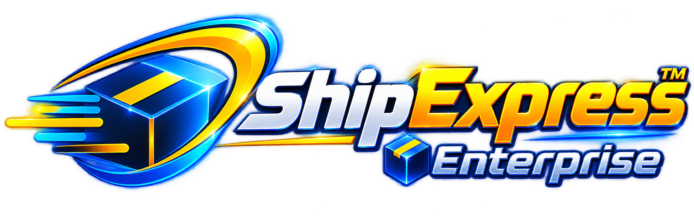

Un laboratorio indipendente. Idee che diventano sistemi.
Stargate Labs è il mio laboratorio privato di ingegneria: qui sviluppo software, studio protocolli e sperimento con hardware e controllo termico. Tra i progetti ci sono ShipExpress, ARA, Hydra One e StargateCryo.
PROTOCOL ANALYSIS SOFTWARE ENGINEERINGEMBEDDED SYSTEMS THERMAL CONTROL
SELECTED WORK
I progetti del laboratorio.
Applicazioni operative, sicurezza, assistenza vocale e ricerca hardware: progetti diversi, uniti dalla stessa attenzione al comportamento reale.
Production software

ShipExpress
La piattaforma logistica che ho progettato per collegare spedizioni, magazzino, ordini e amministrazione. Dal confronto tra corrieri al picking, dai documenti all’analisi dei dati, ShipExpress riunisce le operazioni in un unico ambiente multi-tenant.
Un workspace sperimentale per l’intelligenza artificiale locale, sviluppato a partire da Strata. Riunisce modelli, strumenti, documenti e osservazione dei runtime, con prerequisiti e limiti documentati per ogni percorso.
Un ambiente di analisi per verifiche di sicurezza su sistemi autorizzati. Coordina ricognizione, analisi del codice e delle applicazioni, controllo delle dipendenze e delle API, raccogliendo i risultati in un flusso comune.
Progetto privato · descrizione pubblicaVOICE & ASSISTANCE
ARA
Un assistente personale con interfaccia vocale e memoria documentale. Riunisce motori e servizi configurabili, dispositivi e strumenti operativi, mantenendo esplicite le conferme per le azioni sensibili.
Scopri cosa fa ARAProgetto privato · descrizione pubblicaTHERMAL CONTROL / RUST
StargateCryo
Una dashboard per osservare e gestire un controller Intel Cryo, con telemetria, regolazione, diagnostica e storico. Integra clock Core Temp e sensori Thermaltake TF2/TF3; soglie e compatibilità dipendono dall’impianto.
Ricerca su loop a liquido e sistemi termoelettrici, dall’acquisizione dei sensori alla gestione della condensa. Avvio controllato, protezioni e limiti dei componenti fanno parte del progetto.
Progetto privato · descrizione pubblica
SHIPEXPRESS / LOGISTICS PLATFORM
La logistica, connessa dall’ordine alla consegna.
ShipExpress è una piattaforma che ho sviluppato per gestire i flussi logistici e amministrativi in un unico spazio. Collega corrieri, marketplace e strumenti aziendali, con ambienti separati e permessi dedicati per ogni cliente.
Affianca alle attività operative automazioni, analisi e strumenti di intelligenza artificiale: dalla preparazione della merce alla lettura dei dati e alla gestione delle anomalie.
ShipExpress accompagna chi comincia a spedire e chi gestisce volumi più grandi. Parti con gli strumenti essenziali e scegli il livello adatto quando aumentano ordini, persone e processi.
Spedizioni, ritiri, tracking interno, fatture e documentazione API: una base operativa per iniziare.
02 / EASY & BASIC
Per chi vende online
Più volume e strumenti per clienti e resi; con Basic si aggiungono magazzino, giacenze e processi per il team.
03 / PRO
Più processi, più automazione
Per attività strutturate: workflow, operazioni massive, documenti digitali e integrazioni e-commerce.
04 / ENTERPRISE & ULTRA
Per le grandi organizzazioni
Volumi elevati, analytics, AI e strumenti avanzati; Ultra aggiunge servizi e infrastruttura dedicati.
Moduli, limiti e condizioni variano per piano. Consulta il confronto ufficiale per i dettagli aggiornati.
SHIPEXPRESS / GROWTH OS
Una squadra di agenti, con supervisione umana.
Growth OS è l’ambiente di ricerca di ShipExpress dedicato all’organizzazione delle attività di crescita. Agenti con ruoli distinti aiutano a raccogliere segnali, qualificare contatti, preparare contenuti e analizzare l’operatività.
Una vista condivisa mostra attività e collaborazione tra agenti, attraverso la mappa dell’ufficio operativo. Le proposte e gli esperimenti seguono i controlli e i passaggi di revisione previsti dalla configurazione.
Ambiente riservato · funzioni e disponibilità dipendono dalla configurazione
Coordinamento, analisi, sicurezza, contenuti, contatti e attivazione sono rappresentati in un unico spazio operativo.
02
Proposte da valutare
Le attività generano bozze e proposte: la revisione o l’applicazione dipendono dal livello e dalle impostazioni attive.
03
Laboratorio di esperimenti
Scenari sintetici e valutazioni strutturate aiutano a confrontare istruzioni e raccogliere evidenze, con revisione umana.
04
Memoria e collaborazione
Vista delle comunicazioni tra agenti, memoria condivisa e strumenti per seguire attività e risultati.
Growth OS è un ambiente amministrativo riservato: attivazione, autonomia e integrazioni dipendono da permessi, impostazioni e stato di sviluppo.
GROWTH OS / COME FUNZIONA
Dalla ricerca alla revisione, fino all’evoluzione.
La squadra lavora per fasi: osserva, prepara proposte e raccoglie evidenze. La disponibilità dei passaggi e il grado di autonomia dipendono dai controlli attivi.
01 / RICERCA
Hunter trova i lead
Il procacciatore raccoglie potenziali contatti da fonti pubbliche. L’archivio organizza fonte, punteggio, fascia e stato, rispettando i blocchi di contatto.
02 / ANALISI
La squadra valuta
Pulse analizza i segnali, Sentinel presidia la sicurezza e Aether coordina il lavoro; la memoria condivisa collega attività ed evidenze.
03 / PROPOSTE
Contatti, contenuti e attivazione
Nexus prepara attività di contatto, Echo lavora sui contenuti e Guide sull’attivazione. Le azioni esterne seguono i permessi e le approvazioni configurati.
04 / QUALITÀ
Il giudice esamina le bozze
La valutazione delle proposte e il registro delle decisioni aiutano a distinguere il materiale pronto da quello da rivedere.
05 / AUTOEVOLUZIONE
Regole, controlli e revisione
Se abilitato, il livello Tier 1 può applicare automaticamente alcune proposte verificate entro limiti configurati. Tier 2 e Tier 3 richiedono intervento umano; per i percorsi previsti sono disponibili controlli canary e rollback.
Lead e qualificazioneSchermata reale: dati identificativi sfocati.AutoEvoluzioneVista dal server di sviluppo; comportamento soggetto a configurazione e policy.
Laboratorio agentiProve interne su scenari sintetici e proposte con evidenze.
Le schermate mostrano l’ambiente di sviluppo e non costituiscono una garanzia delle funzioni disponibili in ogni configurazione.
SHIPEXPRESS / BEYOND SHIPPING
Oltre la gestione della spedizione.
ShipExpress integra strumenti di analisi, controllo e logistica che estendono il lavoro quotidiano della piattaforma.
01 / PLATFORM INTELLIGENCE
Analisi delle anomalie
Gli strumenti AI supportano la classificazione degli errori e la preparazione di proposte di intervento, con controlli e revisione secondo la configurazione.
02 / LOGISTICS HUB
Operazioni di hub
Un’area dedicata riunisce deposito, transito merci, evasione ordini e servizi accessori, con percorsi di controllo per il cliente.
03 / CREDIT INTELLIGENCE
Credito e rischio
Un modulo amministrativo raccoglie strumenti per scoring, analisi del rischio e controlli antifrode, secondo integrazioni e permessi attivi.
La disponibilità delle funzioni dipende da piano, configurazione e stato di sviluppo.
ARA / PERSONAL AI SYSTEM
Un sistema personale, oltre la voce.
ARA è il sistema che ho sviluppato per interagire con il mio ambiente digitale. Unisce conversazione, memoria e strumenti operativi in un’interfaccia con avatar e centro di controllo.
Può collegare applicazioni, computer e dispositivi autorizzati: ogni integrazione conserva i propri permessi e le operazioni sensibili richiedono conferma.
Voce e presenza
Conversazione vocale, riconoscimento, sintesi e avatar, con motori locali o cloud configurabili.
Computer e progetti
Strumenti per browser, applicazioni e file autorizzati; collegamenti ai client Codex e OpenCode per il lavoro sui progetti.
Memoria e documenti
Memoria documentale, lettura delle fonti e accessi configurabili alle informazioni locali.
Dispositivi e casa
Connect riunisce percorsi per Android, TV, luci e Google Home, secondo dispositivi, account e permessi disponibili.
Musica e ambiente
Controlli e integrazioni per riproduzione musicale, Spotify e illuminazione SignalRGB.
Comunicazione e controllo
Canali configurabili, tra cui Telegram e WhatsApp Business, e un centro di controllo per servizi, motori e autorizzazioni.
La disponibilità effettiva dipende da configurazione, compatibilità, permessi e servizi attivi. ARA è un progetto privato.
PRIVATE LAB / RICERCA E SVILUPPO
Un laboratorio, molte discipline.
Stargate Labs è lo spazio in cui sviluppo applicazioni e metto alla prova idee che attraversano software, elettronica e sistemi fisici. Qui l’analisi dei protocolli incontra la sperimentazione sui dispositivi e l’attenzione alla sicurezza.
Dal controllo della temperatura alla comunicazione tra hardware diversi, il lavoro parte dall’osservazione, prosegue con prototipi e test, e conserva nella documentazione ciò che è stato verificato.
Controllo della sezione RGB attraverso il protocollo locale della lampada: configurazione TCP, frame UDP e recupero della connessione. 77 controlli automatici.
Progetti indipendenti, non affiliati ai produttori. Le verifiche di protocollo non equivalgono a una certificazione della sincronizzazione ottica. I dettagli di compatibilità sono documentati nelle singole repository.
ENGINEERING PRACTICE
Il metodo, prima degli strumenti.
01
Comprendere prima di intervenire
Ricostruisco flussi, formati e vincoli a partire da codice, traffico e comportamento osservabile. Le ipotesi restano distinte dalle prove.
02
Progettare il recupero
Backup, riconnessioni, timeout e gestione dei dati mancanti fanno parte dell’implementazione, insieme alla funzionalità principale.
03
Verificare il comportamento
Test di protocollo, controlli di regressione e prove sul dispositivo rispondono a domande diverse. La documentazione chiarisce quale verifica sostiene ogni risultato.
Gestionale multi-tenant per spedizioni, magazzino, ordini, documenti e CRM. Ogni cliente dispone di dominio, database e ruoli separati. Le integrazioni comprendono confronto tariffe, creazione e tracciamento spedizioni, contrassegno, documenti di trasporto e fatturazione elettronica. Il magazzino gestisce giacenze, ubicazioni, movimenti, conteggi e imballaggi; gli ordini includono flussi di stato e picklist con lettura barcode. La ricerca documentale usa RAG e interrogazioni in linguaggio naturale.
Snapshot documentato 2026.2.5: 1.462 endpoint API, 357 modelli dati, 42 corrieri, 74 servizi, 8.896 test su 1.059 file. Sono i conteggi già pubblicati per quella versione, non una nuova misura della build attuale.
ARGUS
Il flusso di analisi coordina 17 scanner: 6 per ricognizione, 4 DAST, 1 SAST, 2 SCA, 2 per credenziali esposte, 1 per API e 1 per fuzzing. Le immagini degli strumenti sono fissate a versioni specifiche. Il sistema di agenti separa pianificazione ed esecuzione delle attività sui target autorizzati.
Snapshot già documentato v0.2.0: 14.071 righe TypeScript, 42 file di test, 71 endpoint API e 11 tabelle. I conteggi descrivono quella versione.
ARA
ARA riunisce voce e avatar, memoria e documenti, strumenti per computer e progetti, dispositivi, musica e comunicazioni. I motori locali e cloud, gli account e i dispositivi dipendono dalla configurazione; le operazioni sensibili seguono i permessi e le conferme previste.
La descrizione precedente documentava Whisper, Kokoro e memoria TF-IDF: descriveva una configurazione storica, non tutte le integrazioni attuali.
Snapshot già documentato: 29.537 righe Python. La latenza inferiore a 5 ms riportata nella presentazione precedente riguarda il router, non l’intera risposta vocale; non è stata rimisurata in questo aggiornamento.
StargateCryo e hardware
Il progetto documenta un controller Intel Cryo Gen 1 modificato abbinato a una cella TEC Gen 2. La versione desktop pubblicata integra Core Temp e sensori Thermaltake TF2/TF3. Configurazione, profili, log, storico, diagnostica e report restano descritti nella repository dedicata. I sorgenti e l’eseguibile desktop hanno provenienza e limiti dichiarati; durante la pubblicazione non sono state modificate le impostazioni del controller attivo.
Verifica di pubblicazione: 322 test dell’applicazione e 28 della libreria passati. Le vecchie conversioni percentuale/watt e le precedenti descrizioni OCP sono superate dalle note della release v2.9.0; non vengono riproposte come dati attuali.
GITHUB / PUBLIC ACTIVITY
Statistiche e visite.
Dati delle repository pubbliche e contatore visite del profilo, con le stesse fonti già utilizzate.